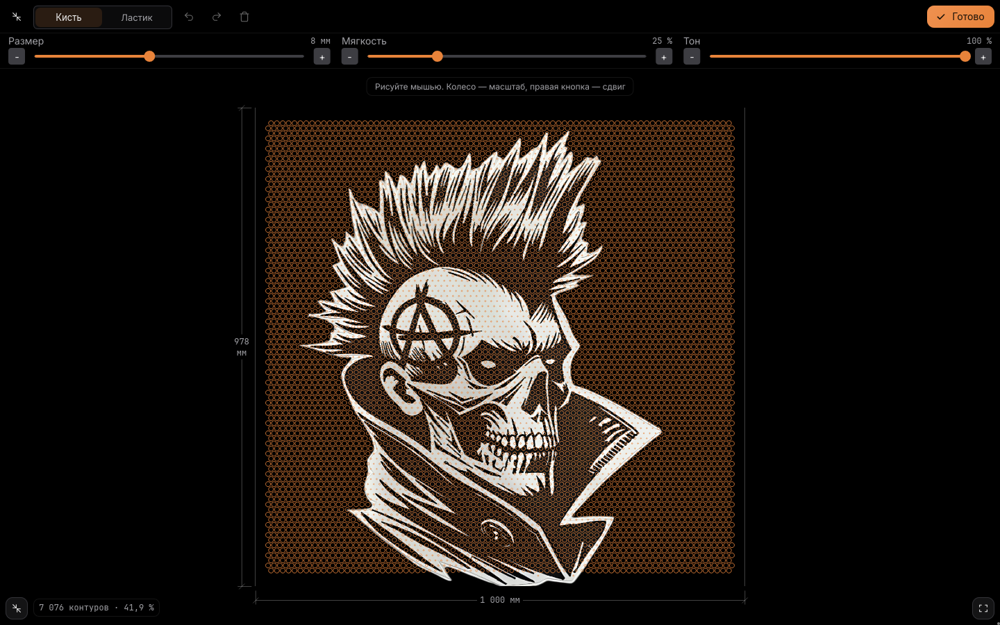
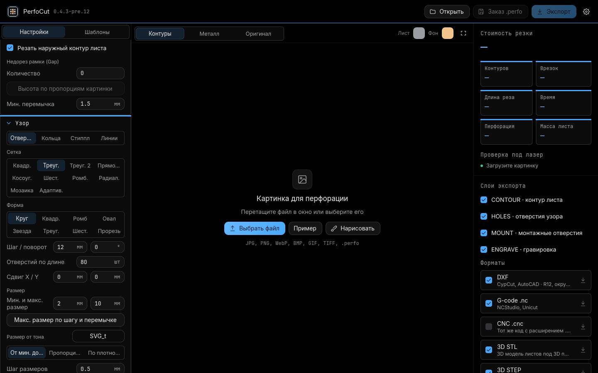
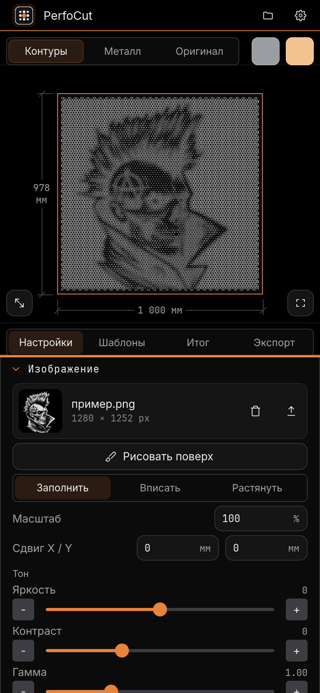
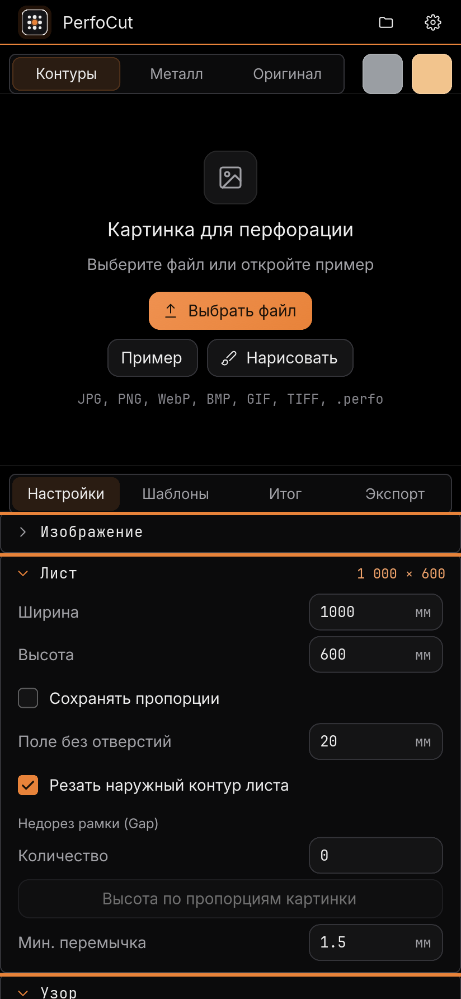
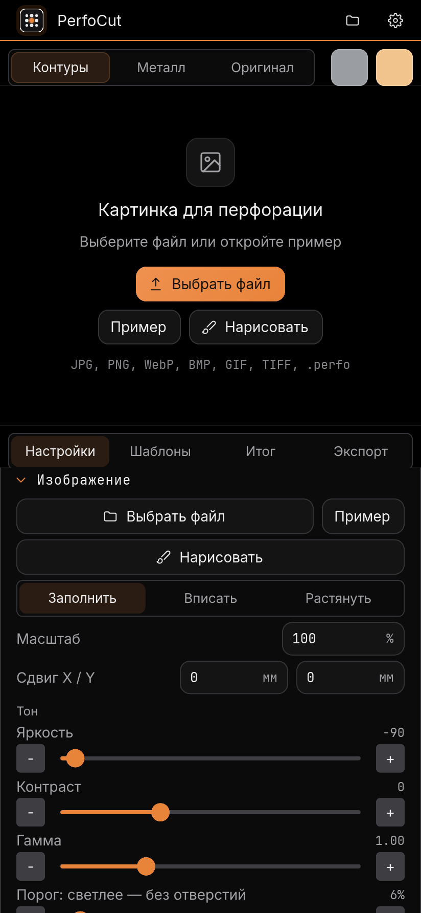

04 / Галерея
Интерфейс в деле
Снимки текущей версии: рабочий стол, телефон, рисование и результат.
 Рабочий столПерфорация по картинке
Рабочий столПерфорация по картинкеКонтуры перфорации
Контуры для резки

Холст на весь экран
Линии, светлая тема
Телефон: настройки
Телефон: итог
Телефон: рисование